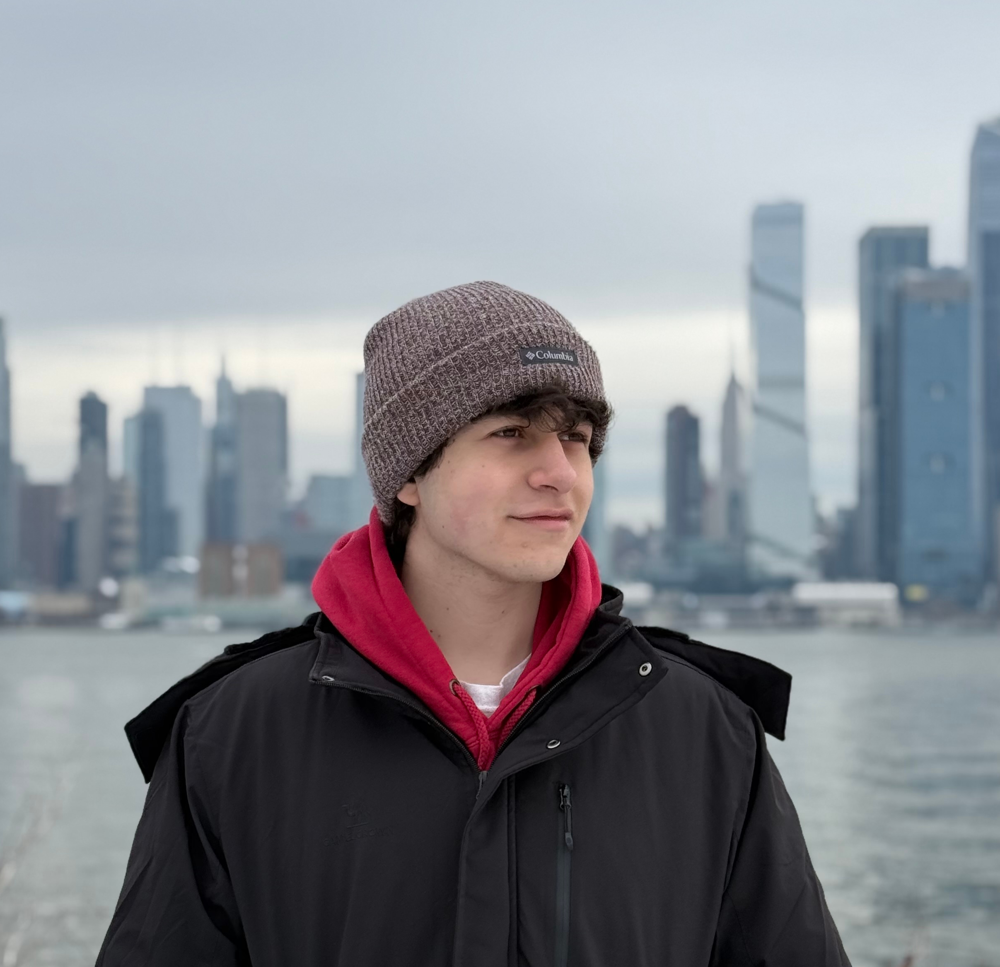

I began coding in high school and quickly grew passionate about solving problems and creating useful tools. From competitive programming to building web apps, I enjoy exploring new technologies and turning them into practical projects that simplify workflows and improve everyday life.
Outside of coding, I’m a big football fan—Barcelona is my favorite team, and Messi is the greatest of all time in my eyes. I also enjoy playing the guitar, and if I had to pick a spirit animal, it would be a polar bear—especially Ice Bear from We Bare Bears.
